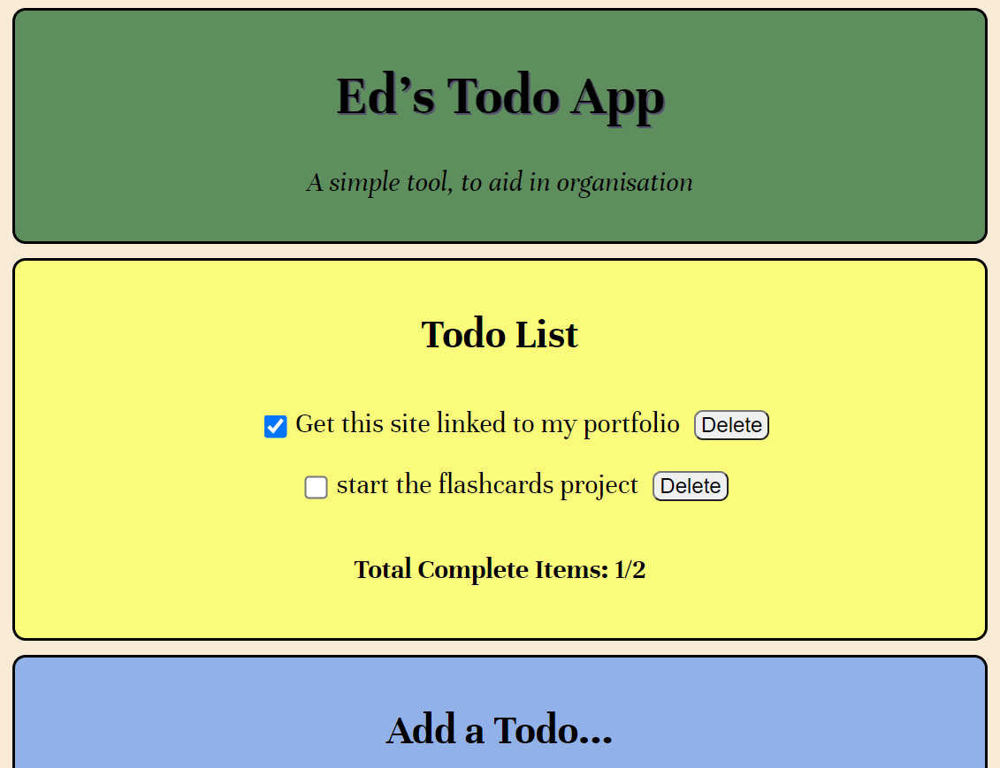
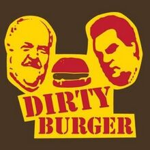
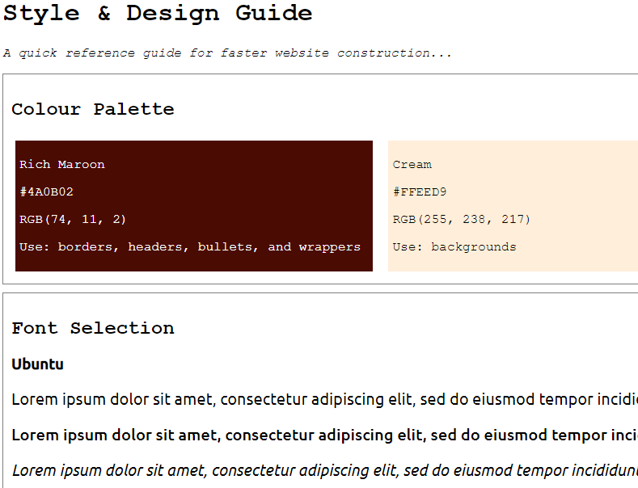

My Projects
Todo App
Purpose
The Todo App was a personal project, testing my understanding of the React and Redux libraries. After a great deal of struggling to get my head around these, making a number of simple little apps using them such as this one
seemed a sensible way to make sure I'd understood things correctly before moving on. Its rather simple appearence is due mainly to not wanting to spend too long on this, but to crack on testing my newfound react/redux skills
elsewhere!
Skills and Technology used
This web app was written in VSCode, using JSX, HTML, CSS, and JavaScript, with a heavy emphasis on React and Redux.
What I learnt from this
Creating this app helped me gain confidence with my newfound understanding of React and Redux. After a few weeks of having had to "apply the breaks" in my studies to really wrap my head around these topics, this app represents
the culmination of what I learned during that pause.
The Dirty Burger
Purpose
This was a Codecademy project, in which I was tasked with creating a non-functional front-page for a fictional business of my choice. I chose the "Dirty Burger" burgervan business from the tv show "Trailer Park Boys".
The aim of the project was to give my CSS skills a good test, in particular regarding the use of flexboxes. It was also designed to test my understanding of media queries, and responsive, dynamic design.
It should be noted that this page is intended merely as a homage to the show, and that I don't own the rights to any of the images used.
Skills and Technology used
This webpage was created in VSCode, using HTML and CSS, with Git versioning technology. A fair amount of debugging and general headscratching was also aided immensly by the Chrome developer tools. It had a particular focus on the use of CSS flexboxes.
What I learnt from this
In short, quite a lot! Whilst I had learned a lot about the semantics around flexbox use before embarking on this project, I was mixing up rules like justify/align, and content/items quite a bit.
This certainly helped me become more comfortable with flexbox use. It also gave me more experience at actually writting an entire page's CSS file, and working out how all the different selectors interacted.
The media query side of the project also taught me a great deal about how to make pages responsive, and I'm pleased with the result.
Website Style & Design Guide
Purpose
This is a sample Style & Design Guide for creating a set of webpages. This was a Codecademy project, in which I was tasked with making a simple page with this sort of information contained on it, partially as a test of my CSS skills,
and partially as a test of my understanding of how to insert custom fonts into a webpage with the help of Google Fonts. Incidently, I came back to this project when making this website, and used it as a starting point,
although I changed the serif font from Alegreya to Unna, and haven't stuck strictly to the text styles guide.
Skills and Technology used
This simple page was written in HTML and CSS with the ever-wonderful VSCode. It made use of Git versioning technology, and Google Fonts.
What I learnt from this
The main thing I took away from this, beyond how helpful a guide like this could well be if building a set of pages, was the use of Google Fonts in CSS documents.
As I hadn't built a page from scratch since much earlier in my course, and not for quite a while, this was also quite a nice refresher of just simple, boilerplate html.
Excursion App Landing Page
Purpose
This is a "landing page" for a fictional App. The purpose of this Codecademy project was to test my understanding of inserting media into webpages. I was given a precise spec sheet to work from, with a fair amount of the CSS provided.
Skills and Technology used
This page was created using VSCode, and using HTML, CSS, and Git versioning technology.
What I learnt from this
In completing this simple little project, I demonstrated my ability to follow a spec sheet (I'm sure my former head chef would be so proud!), and confirmed that I had taken on board the semantics around inserting images and video into HTML webpages.